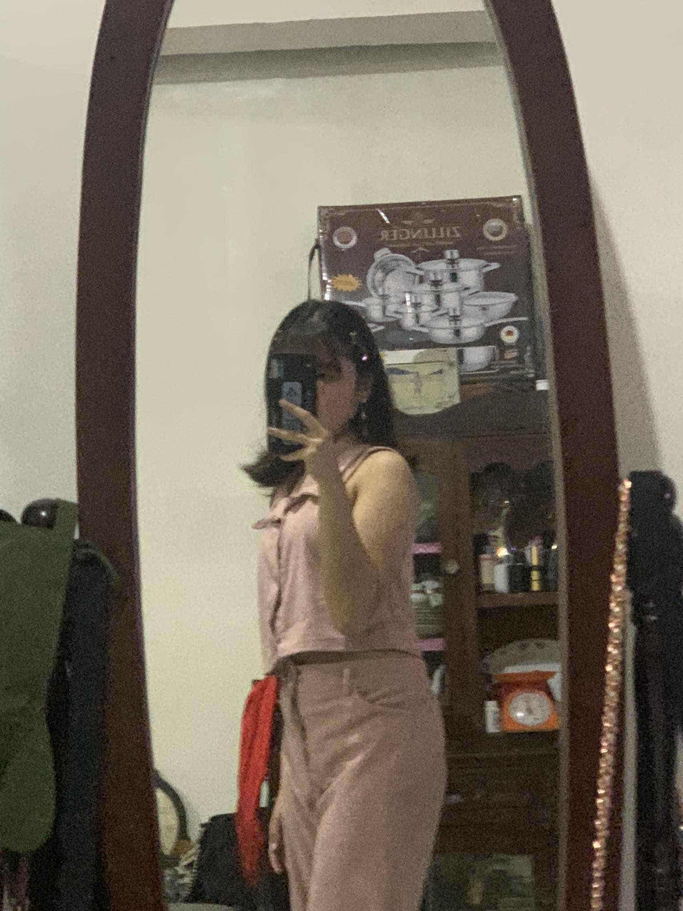

Fhrinzes ‚Äî you are my beautiful dreams üåπ
To my beautiful dreams, Fhrinzes —
Dear Fhrinzes, sana kahit ito man lang ma appreciate mo, pinaghirapan ko din po at sana wag mong deadmahin lang, give me a chance for closure, sorry na miss talaga kita. I am truly sorry for everything that hurt you — I hope this small space with songs and my words can show how much you still mean to me. You are beautiful, kind, brave, and incredibly important. I believe in you, I admire your heart, and I respect your space — but if there's any way we can find a little peace and understanding, please give me that chance. I miss us, and I hope this reaches your heart even a little. Sorry po nasaktan ka po ata sa biro ko, ang tindi na ng galit mo sa akin HAHAHHAHA, or baka kulang ka lang sa lambing HAHAHA jk.
Your Universe
Rico Blanco
Sa ngalan ng pag-ibig mo
December Avenue
14
Silent Sanctuary
Binibini
Zack Tabudlo
Pahintuloy
Shirebound
Sana kahit ito ma appreciate mo
Pinaghirapan ko ito
Give me a chance for closure
Sorry na, miss talaga kita
You are loved
You are my beautiful dream
— your greatest enemy